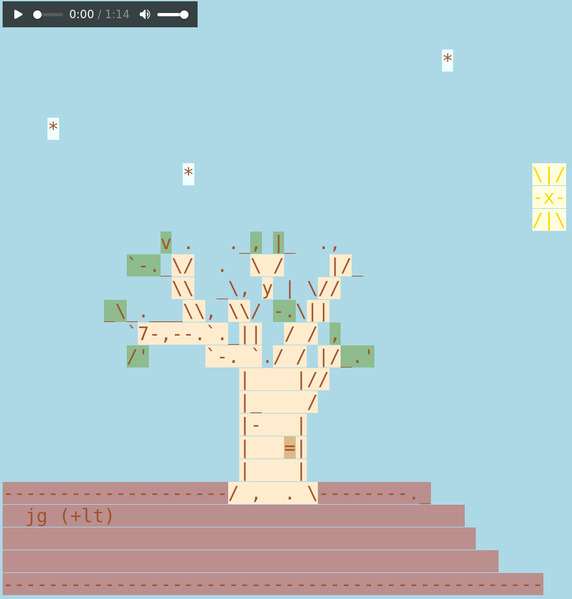

Lee Tusman
↩ Everyday
<
>
Title: Piper's Winter Garden
w/ Piper Haywood
Year: 2023
Medium: HTML, Energy, Sound
Pitch: During an HTML Energy Freewrite sesh at the Brooklyn Botanical Gardens, Piper created a website by writing out by hand the HTML I should follow for coding this winter garden website. I attempted to code on glitch.com's IDE without an internet connection, which failed, so several hours later at home I attempted to recreate this from memory and added embellishments.
Url: freewritegarden/↪

 ©opyleft
©opyleft